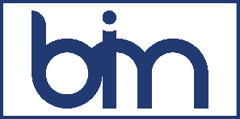
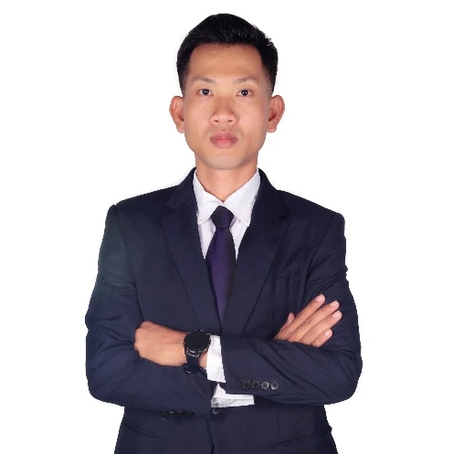
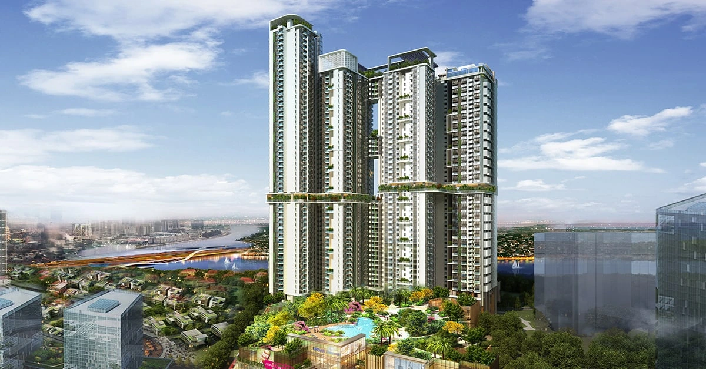

Align on the brief
Review your project, design basis, current information and delivery constraints.
Project needs & technical context
BIM AEC SOLUTIONSSTRUCTURAL ENGINEERING & BIMENGINEERING ACROSS BORDERS
Structural engineering and BIM expertise that helps ambitious projects move forward with confidence.
A technical partner for developers, consultants and contractors. Based in Cambodia. Built on experience in Singapore, Cambodia and Russia.


Phnom Penh, Cambodia ↗
01 / OUR EXPERTISE
Resolve a specific technical challenge or extend your team’s delivery capacity. We shape the scope around your project, standards and milestones.
Find the support you need ↗Engineering for high-rise, residential, commercial and mixed-use developments, from structural concept to detailed documentation.
Connect engineering decisions to coordinated models and usable project information.
Bring an experienced engineering perspective to design decisions before they become site constraints.
Maintain technical continuity as the project moves from design into procurement and construction.
02 / SELECTED EXPERIENCE
Explore selected projects from our team’s professional portfolio, with the structural systems and technical scope behind each.
Selected career and team experience includes work undertaken before BIM AEC Solutions was established in 2025. Project images are architectural renderings and engineering models from the company profile.
Company profile ↓YOUR PROJECT, YOUR PRIORITIES
Tell us what you’re working on. Explore a starting scope for a conversation with Menglim.
Three choices. A clearer starting point.SUGGESTED STARTING SCOPE
03 / WORKING TOGETHER
Work directly with an engineering lead who understands the demands of international AEC collaboration.
Review your project, design basis, current information and delivery constraints.
Project needs & technical contextAgree on deliverables, responsibilities, review points and a programme that fits your team.
Clear scope & proposalDevelop the agreed engineering work with structured reviews and multidisciplinary coordination.
Models, calculations & documentationAddress agreed technical comments and hand over information for your next project milestone.
Review close-out & handoverProject-based consulting and remote technical support for international engineering and architecture firms. Agree working hours, file standards and coordination channels at the outset.
04 / THE PERSON BEHIND THE PRACTICE
Founder & Managing Director · Principal Structural & BIM Consultant
With over a decade of international experience, Menglim brings structural engineering, high-rise design and BIM technical delivery together in one practice.
His career spans projects in Cambodia and Singapore, with a civil engineering education at Saint Petersburg Polytechnic University in Russia. His experience includes reinforced concrete, post-tensioned, steel and composite structures, supported by multidisciplinary coordination.
TOOLS THAT FIT YOUR DELIVERY ENVIRONMENT
Experience applying ACI, ASCE, Eurocode, British Standards and Singapore National Annexes, according to project requirements.
BEFORE WE BEGIN
Yes. Remote technical support and project-based engineering collaboration are part of Menglim’s service offering. We agree coordination hours, communication channels, file formats and review responsibilities for each engagement.
A short project description, location, current stage, required services and target milestones are a useful start. Existing drawings, models and design criteria can follow through an agreed channel. Please arrange confidentiality requirements before sharing sensitive files.
Yes. The discussion can focus on a defined package such as structural analysis, BIM production, design coordination or a technical review. The proposal will set out the agreed scope and deliverables.
Professional credentials and experience are described in the company profile. For each project, the engagement must identify the applicable jurisdiction, approving authorities, local engineer of record and any signing or submission responsibilities.
A proposal follows a review of scope, available information, project complexity, deliverables and programme. Use the consultation form to outline your requirements so the first discussion can focus on fit.
LET’S BUILD THE RIGHT PARTNERSHIP
Bring us your brief, your technical challenge or your next milestone.
30-minute introductory discussion · OnlineLevel 25F, Unit 25F-01B, Morgan Tower
Phnom Penh, Cambodia
PHNOM PENH